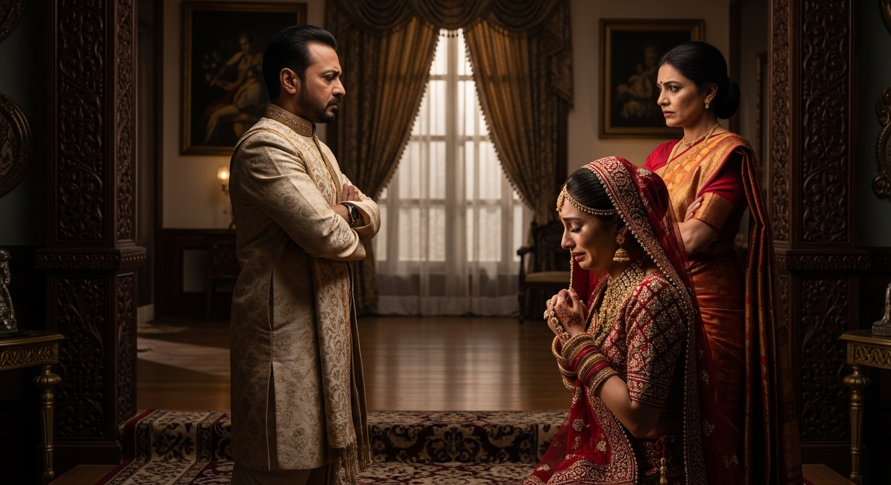
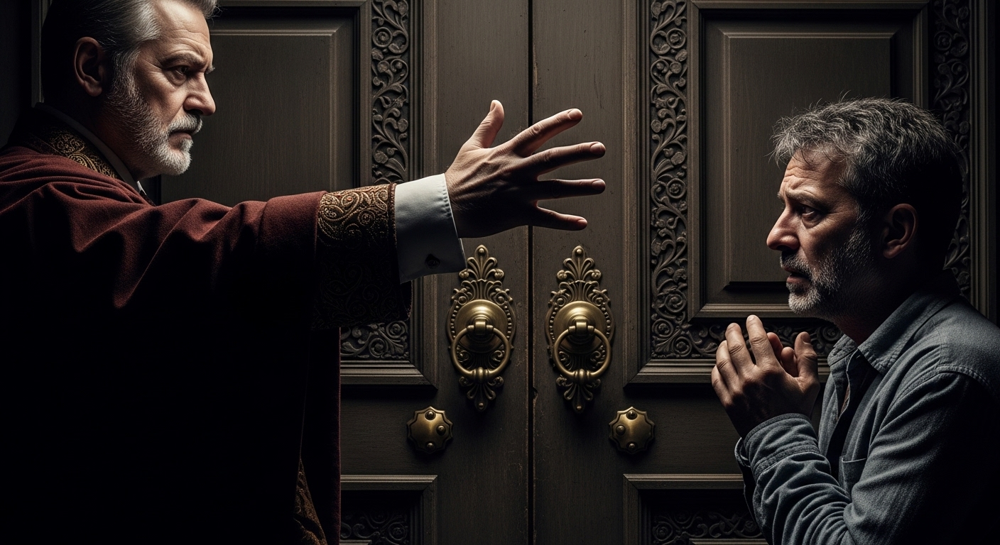
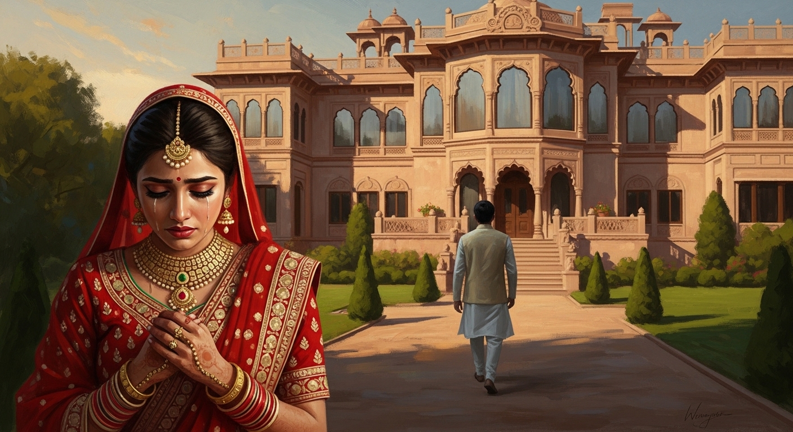

लेखक: विनोद रस्तोगी
मूल विषय: दहेज प्रथा रूपी सामाजिक बुराई और समाज का दोहरा मापदंड (Double Standards)।
पात्र परिचय:
एकांकी की शुरुआत में प्रमोद अपनी बहन कमला को उसके पहले 'सावन' के अवसर पर मायके ले जाने के लिए उसके ससुराल (जीवनलाल के घर) आता है। भारतीय परंपरा के अनुसार विवाह के बाद पहले सावन में बेटी का मायके जाना शुभ माना जाता है। परंतु कमला का ससुर, जीवनलाल, अत्यंत लालची और अहंकारी है। वह प्रमोद से साफ कह देता है कि जब तक शादी में तय किए गए दहेज के पाँच हज़ार रुपये (₹5000) पूरे नहीं दिए जाएँगे, तब तक वह अपनी बहू की विदा नहीं करेगा।

प्रमोद जीवनलाल के बहुत हाथ-पैर जोड़ता है और कहता है कि वह एक मध्यमवर्गीय व्यक्ति है। उसने अपनी बहन की शादी में अपनी हैसियत से बढ़कर खर्च किया है और अब उसके पास पाँच हज़ार रुपये नहीं हैं। लेकिन जीवनलाल उसकी एक नहीं सुनता और उसका घोर अपमान करता है। जब जीवनलाल कमरे से चला जाता है, तब उसकी पत्नी राजेश्वरी वहाँ आती है। राजेश्वरी एक समझदार और सहृदय महिला है। वह अपने पति के लालची व्यवहार से दुखी है। वह प्रमोद को दिलासा देती है और उसे पाँच हज़ार रुपये (अपनी चाबियों का गुच्छा देकर) देने का प्रयास करती है ताकि वह उन रुपयों को जीवनलाल के मुँह पर मारकर अपनी बहन को ले जा सके। परंतु प्रमोद एक स्वाभिमानी युवक है, वह राजेश्वरी के पैसे लेने से मना कर देता है और निश्चय करता है कि वह अपना घर बेचकर पैसे लाएगा।
इसी बीच, जीवनलाल बहुत खुश होता है क्योंकि उसका बेटा रमेश अपनी बहन गौरी (जीवनलाल की बेटी) को उसके ससुराल से विदा कराकर लाने गया है। जीवनलाल को अपनी बेटी से बहुत प्यार है। लेकिन कहानी में मोड़ (Climax) तब आता है जब रमेश घर लौटता है और उसके साथ गौरी नहीं होती। रमेश बताता है कि गौरी के ससुराल वालों ने उसे विदा करने से मना कर दिया है। उन्होंने कहा है कि जब तक जीवनलाल गौरी की शादी में कम दिया गया दहेज पूरा नहीं करेगा, तब तक वे गौरी को विदा नहीं करेंगे।
यह सुनकर जीवनलाल के पैरों तले ज़मीन खिसक जाती है। उसे समझ नहीं आता कि उसके साथ ऐसा कैसे हो गया। तब उसकी पत्नी राजेश्वरी उसे आईना दिखाती है। वह जीवनलाल को समझाती है कि "बेटियाँ तो सबकी एक सी होती हैं... जब हम किसी की बेटी को दहेज के लिए रुला सकते हैं, तो हमारी बेटी को भी कोई रुला सकता है।" राजेश्वरी जीवनलाल को अहसास कराती है कि वह अपनी बहू (कमला) के लिए कसाई बन रहा था, और अब गौरी के ससुर भी गौरी के लिए वैसे ही कसाई बन गए हैं। इस घटना से जीवनलाल की आँखें खुल जाती हैं। उसका अहंकार टूट जाता है। वह अपनी गलती स्वीकार करता है और बिना किसी दहेज की माँग के अपनी बहू कमला को खुशी-खुशी उसके भाई प्रमोद के साथ विदा कर देता है।

इस एकांकी के माध्यम से लेखक विनोद रस्तोगी ने भारतीय समाज में गहरी जड़ें जमा चुकी 'दहेज प्रथा' जैसी भयंकर कुरीति पर करारा व्यंग्य किया है। एकांकी यह संदेश देती है कि समाज में 'बेटी और बहू' के बीच दोहरा मापदंड (भेदभाव) नहीं होना चाहिए। जो लोग अपनी बहू को दहेज के लिए प्रताड़ित करते हैं, उन्हें यह नहीं भूलना चाहिए कि उनकी अपनी बेटी भी किसी के घर की बहू है। जिस प्रकार हमें अपनी बेटी का दुख और अपमान सहन नहीं होता, उसी प्रकार हमें किसी दूसरे की बेटी (अपनी बहू) का भी अपमान नहीं करना चाहिए। लालच और अहंकार मनुष्य की इंसानियत को खत्म कर देते हैं।